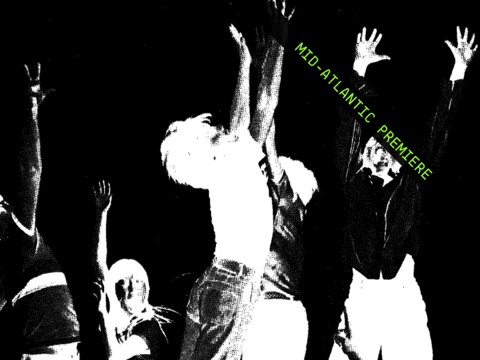

About the film
In 2018, 22-year-old Jazmine Willock was found dead in her home in Tucson, Arizona. Her partner, Taris Ford-Dillard, shot her multiple times with a handgun and then killed himself. Taris should never have had a gun. He was prohibited from having one under federal law because of a domestic violence conviction. Despite this, he was never ordered to surrender any firearms.
Unrelinquished
exposes the gaps in the system that are allowing domestic abusers to keep their guns, with deadly consequences.
For nearly a year, Jennifer Gollan, a reporter with
Reveal
from the Center for Investigative Reporting, has been doing what no one in the federal government is: tracking the deaths of those who were killed by intimate partners who were banned from having a firearm. And what she’s exposed, is the disturbing reality that the rights of abusers to have a gun are greater than their victims’ rights to be safe.
In her exclusive investigation, Gollan found that over a recent four year period, at least 90 people were convicted, charged, or implicated in the deaths of their partners and others, using guns they weren’t allowed to have under federal law. Gollan also investigates the case of Chad Absher, a convicted felon in Florida, who’s accused of shooting and killing his ex-girlfriend, Ashlee Rucker, and badly injuring her sister, Lisa.
Both Chad and Taris had a documented history of domestic violence and were known to local authorities. The warning signs were in clear sight but because there are very few mechanisms to make sure guns are taken away from prohibited offenders, they kept them anyway. As Jazmine’s mom, Annette, says in the documentary, “The courts knew, the investigators knew, the police knew, he had a gun. And there was nobody enforcing it.”
In this groundbreaking film, Al Jazeera’s award-winning documentary program
Fault Lines
and
Reveal
show the consequences of a system that time and again failed to prevent so many deaths.
Unrelinquished
is featured in Short Cuts Program #3.
Amina Waheed
Laila Al-Arian
RESERVE A FREE TICKET
At the festival
More films on these topics
 Crime & ParodyWill Thwaites2026 · 88 min
Crime & ParodyWill Thwaites2026 · 88 min Free Joan LittleYoruba Richen2026 · 36 min
Free Joan LittleYoruba Richen2026 · 36 min My Brother's KillerMy Brother’s Killer2026 · 95 min
My Brother's KillerMy Brother’s Killer2026 · 95 min- Short Strand: Minneapolis: On the Record + A Special ScreeningLaura Poitras, Rachel Lauren Mueller · Anne Sundberg · Yoruba Richen, Christalyn Hampton2026
 Ask E. JeanIvy Meeropol2025 · 91 min
Ask E. JeanIvy Meeropol2025 · 91 min
Magic & MonstersNorah Shapiro2025 · 89 min